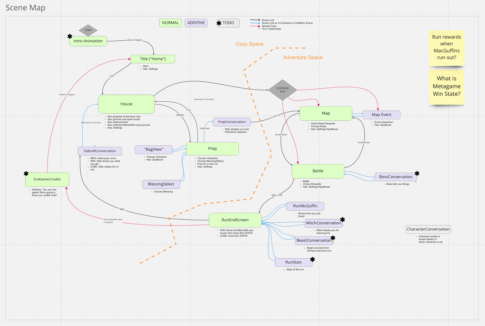
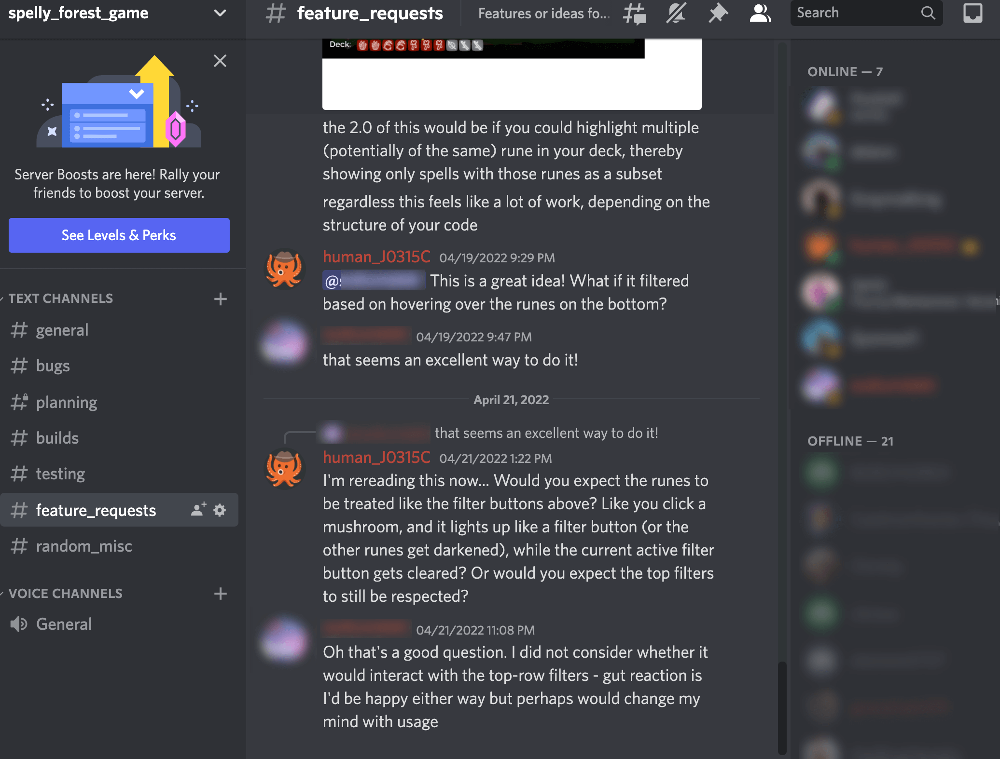
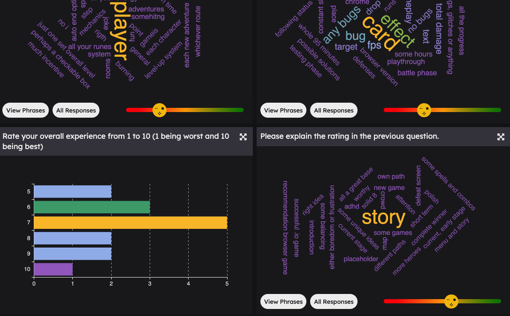

Game / Unity
Spelly Forest
A roguelike deck-building prototype with spell combinations, magical runes, and a forest full of mushrooms.

Project overview
I led Spelly Forest from concept through playable Unity builds, handling game design, C# engineering, prototyping, and outreach.
Tools Unity, C#, Discord, VS Code, Git/Github, Codecks, Miro, GameTester.gg.
Iteration

- I released builds every two to four weeks and used playtest feedback to revise or replace core mechanics.
- Using a live whiteboarding tool helped me track all these changes and share sketches of ideas with collaborators.
- A progress log and links to play the WebGL build of the game were updated on the landing page I created for the game.
- All changes were version-controlled using git, allowing me to rollback to any point in the project history and separate development efforts with feature branches.
- I favored simple abstractions so I could refactor mechanics as the design evolved.
Prioritization

- From my years in software agencies, I've tried loads of project management tools, but I didn't think any of them would make sense for a solo project.
- For Spelly Forest, I tried out the fantastic Codecks - a tool aimed at game dev specifically. Work is organized into "decks" and "hands", and I've found the prioritizing features to be elegant and easy. Above is a screenshot of my Art "deck", with the highest priority work on top.
- I kept the scope focused by prioritizing work that mattered most for the next playable build.
Documentation

- Initially all design documentation was in google spreadsheets, but I quickly found that to be restrictive.
- I moved everything into Miro, where I maintained a detailed living whiteboard document. It included everything from character builds to dev details and C# class hierarchies, as well as sketches and plans for future features and additions. I treated this document as the source of truth for all things related to game design.
- This was immensely helpful for collaborating, especially remotely. It was easy to leave comments and sticky notes for whatever issue or question came to mind during a conversation.
- I also created an onboarding document for testers to make it easy for folks to jump in.
Collaboration

- I set up and ran a Discord community to discuss plans and collect feedback. It grew to about 30 members from game development communities, playtest groups, and my circle of friends and family.
- I held recurring architecture reviews with a friend who develops in C#. Our conversations often ran late as we talked through the code and found places to simplify it.
- I worked with a game designer who helped me see the game from the player’s perspective and address balance issues.
Validation

- My partner Jasmine facilitated moderated playtests with people new to the game. We observed where players got stuck, collected their feedback afterward, and often recorded the sessions so we could revisit those moments.
- In summer and fall 2022, I ran two rounds of paid playtesting with about 15 players each. I integrated the GameTester.gg API to track in-game events during the sessions.
- The tests helped me prioritize changes and identify an audience for the game: casual players who enjoy a cozy, lighthearted experience with strategic depth.
- Here's one of my favorite bits of feedback: "I can't say I fell in love with this game, but I definitely have a huge crush! I am a fan of indie games, because I always find something unique in them, how the tell a story, how deceivingly simple they seem."